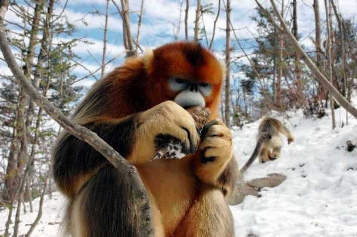

The Golden Monkey:
-China’s golden monkeys are an endangered species; leaving only 2,000 or less left in the world.
-Golden monkeys can live up to 25 years.
The Three Species of the Golden Monkey are:
---Yunnan Golden Monkey
---Sichuan Golden Snub-Nose Monkey
---Black Snub-Nosed Monkey

-Yunnan Golden Monkeys live in the depths of Chinese forests in the snow covered mountains of Yunnan-Tibeten areas, with the population of about one thousand. The Yunnan snub-nosed monkey is the most endangered of China's three snub-nosed monkey species. The long, shaggy coat is mainly black on the back, arms and legs and white on the front. White hair is also present on the flanks and this is particularly long on the adult males. The lips are a deep pink, whilst the face is paler and there are yellowish-grey hairs on the shoulders. These monkeys get their common name for their unusual noses; the nasal bones are absent and the nostrils are upturned. Young are born white but become grey over several months.
--Black snub-nosed monkeys spend a lot of time in high evergreen trees. Their pelt was once valued as a remedy for rheumatism. Today they have suffered from loss of habitat as a reuslt of logging. There are believed to be only between 800 and 1,200 left. They were almost completely unknown until the 1990s.
-The most widely known species is Sichuan Golden Monkeys that are distributed in Sichuan, Shaanxi, Hubei and Gansu. The Sichuan is an old world monkey. It is endemic to a small area in temperate, mountainous forests of central China, primarily around the Sichuan basin. The Chinese name of this monkey is Sichuan Golden Hair Monkey. Snow occurs frequently within its range and it can withstand colder average temperatures than any other non-human primates. They feed mainly on pine needles and young firs
-They live in broadleaf forests or coniferous and broadleaved mixed forests 1400-3000 meters above sea level.
-Their habitat is almost the same as that of the Giant Panda. And like the Giant Panda, the Golden Monkey is unable to bear scorching heat and can survive severe cold.
-The Golden Monkey is a gregarious animal that live in family groups, with the biggest herds of up to 600 individuals.
-Golden Monkeys mainly live in trees and they also seek food on the ground.